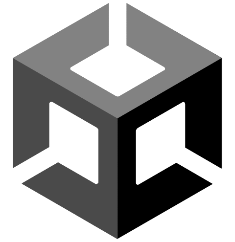
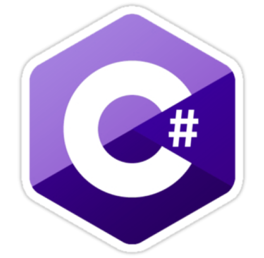

Bad Dream
프로젝트 개요
프로젝트 주제
및 선정 배경
및 선정 배경
개발 및 수행 목표
뭔가 주인공이 악몽을 꿔서 거기서 나오는 괴물들한테서
도망친다는 스토리가 길을 잃거나 어느 폐가에 가서
도망친다는 스토리보다 자연스러울 거 같아서
이 주제를 선정하였습니다.
도망친다는 스토리가 길을 잃거나 어느 폐가에 가서
도망친다는 스토리보다 자연스러울 거 같아서
이 주제를 선정하였습니다.
일단 기본적으로 게임에서 중요한 플레이어와 몬스터
그리고 게임오버와 게임클리어 등 필요한 부분은
어느 정도 구현을 완료한 상태입니다.
앞으로는 플레이어의 앞길을 가로 막는 장애물과
함정들, 그리고 점점 늘어나는 몬스터까지 다양하게
추가할 생각입니다.
그리고 게임오버와 게임클리어 등 필요한 부분은
어느 정도 구현을 완료한 상태입니다.
앞으로는 플레이어의 앞길을 가로 막는 장애물과
함정들, 그리고 점점 늘어나는 몬스터까지 다양하게
추가할 생각입니다.
이름:김종은
이메일:sodekmf319@gmail.com
깃허브:https://github.com/lKF94l
[주요 활동]
ㄴ 2021년 해커톤 대회
ㄴ 2022년 1학기/2학기 캡스톤
ㄴ 2023년 1학기 캡스톤


이메일:sodekmf319@gmail.com
깃허브:https://github.com/lKF94l
[주요 활동]
ㄴ 2021년 해커톤 대회
ㄴ 2022년 1학기/2학기 캡스톤
ㄴ 2023년 1학기 캡스톤

Unity
Asset
Store
Store
C#
[2023.11.03]
Bad Dream 관련 에셋 찾은 후 Import
[2023.11.04]
Title 제작
맵 구현
Player 구현
Enemy 구현 중
[2023.11.05]
Enemy 구현(NavMesh)
게임 UI 구현(Esc)
Title 배경음 삽입
게임오버/게임클리어 구현
Bad Dream 관련 에셋 찾은 후 Import
[2023.11.04]
Title 제작
맵 구현
Player 구현
Enemy 구현 중
[2023.11.05]
Enemy 구현(NavMesh)
게임 UI 구현(Esc)
Title 배경음 삽입
게임오버/게임클리어 구현
진행 과정
스토리
시스템 구조
세부 설명
기타
어느 날, 주인공은 너무 피곤하여 바로 침대에 누워 잠을 청했다.
눈을 떠보니 집이 아닌 도시에 누워있었고, 시골처럼 정말 소리 하나 들리지 않았다.
지금 현재 꿈인지 생시인지 구분이 잘 가지 않아 얼떨떨한 주인공은 뒤에서 웃는 소리를 들었고,
왠 이상한 사람이 떠 있는 상태로 자신에게 다가오는 걸 본 주인공은 급히 도망쳤다.
주인공은 빨리 이곳을 탈출하려 하는데…
눈을 떠보니 집이 아닌 도시에 누워있었고, 시골처럼 정말 소리 하나 들리지 않았다.
지금 현재 꿈인지 생시인지 구분이 잘 가지 않아 얼떨떨한 주인공은 뒤에서 웃는 소리를 들었고,
왠 이상한 사람이 떠 있는 상태로 자신에게 다가오는 걸 본 주인공은 급히 도망쳤다.
주인공은 빨리 이곳을 탈출하려 하는데…
이 게임은 악몽을 꾸는 주인공의 이야기를 담은 게임이다.
어느 날, 학원을 마치고 피곤하여 잠을 청한 주인공은 눈을 떠보니 길바닥 누워 있었다.
분명히 도시인데 사람 1명 없고, 분위기가 매우 어둡고 칙칙한 곳에
위치한 주인공은 이것이 현실인지 꿈인지 헷갈려하였다.
주인공은 빨리 이곳을 빠져나가려 하는데…
싸이코패스한테서 도망치면서 열쇠를 찾고, 철장을 열어 빠져나가고, 그러면서 악몽에서 벗어나는 게임이다.
어느 날, 학원을 마치고 피곤하여 잠을 청한 주인공은 눈을 떠보니 길바닥 누워 있었다.
분명히 도시인데 사람 1명 없고, 분위기가 매우 어둡고 칙칙한 곳에
위치한 주인공은 이것이 현실인지 꿈인지 헷갈려하였다.
주인공은 빨리 이곳을 빠져나가려 하는데…
싸이코패스한테서 도망치면서 열쇠를 찾고, 철장을 열어 빠져나가고, 그러면서 악몽에서 벗어나는 게임이다.
Bad Dream은 공포 장르이며, 탈출을 목표로 진행이 되는 게임이다.
커다란 도시 안에 하나의 탈출구가 있으며, 적을 피해 가면서
탈출구를 찾는 게임이다.
플레이어는 앉기, 걷기, 달리기, 점프를 할 수 있고, 적은 NavMesh
시스템을 사용해서 주인공의 위치를 찾아 쫓아오게 제작되어있다.
적 오브젝트에 플레이어가 닿는 순간 게임오버 화면이 나오고,
탈출구로 향할 시 게임클리어 화면이 나오면서 타이틀 화면으로 넘어가게 된다.
커다란 도시 안에 하나의 탈출구가 있으며, 적을 피해 가면서
탈출구를 찾는 게임이다.
플레이어는 앉기, 걷기, 달리기, 점프를 할 수 있고, 적은 NavMesh
시스템을 사용해서 주인공의 위치를 찾아 쫓아오게 제작되어있다.
적 오브젝트에 플레이어가 닿는 순간 게임오버 화면이 나오고,
탈출구로 향할 시 게임클리어 화면이 나오면서 타이틀 화면으로 넘어가게 된다.
공포적인 느낌을 낼 수 있도록 호러 장르에 쓰일만한 폰트를 사용하여 호러 장르에 맞게 제작을 하였고,
Title 화면에다가 으스스한 배경음을 탑재해서 조금 더 무서운 분위기를 줄 수 있도록 제작하였다.
게임오버화면과 게임클리어화면은 각각 텍스트에 색상을 입혀서 그 상황에 맞는 분위기를 주었다.
Title 화면에다가 으스스한 배경음을 탑재해서 조금 더 무서운 분위기를 줄 수 있도록 제작하였다.
게임오버화면과 게임클리어화면은 각각 텍스트에 색상을 입혀서 그 상황에 맞는 분위기를 주었다.
추진 결과
수행 과정
및 결과 분석
및 결과 분석
유지 보수 계획
일단 가장 중요한 플레이어와 적은 구현이 완료가 되었고,
타이틀 화면과 게임오버, 게임클리어 화면 등 필수적인 요소들은
모두 제작이 어느 정도 완성이 되었다.
결과적으로 필수적인 요소들은 포함되어 있기에
게임을 진행하는 데 있어서 걸리적거리는 일은 없으나
장애물, 함정 등은 추가되지 못했기에 이 부분에 있어선
아쉬운 결과라고 생각이 든다.
타이틀 화면과 게임오버, 게임클리어 화면 등 필수적인 요소들은
모두 제작이 어느 정도 완성이 되었다.
결과적으로 필수적인 요소들은 포함되어 있기에
게임을 진행하는 데 있어서 걸리적거리는 일은 없으나
장애물, 함정 등은 추가되지 못했기에 이 부분에 있어선
아쉬운 결과라고 생각이 든다.
앞으로의 유지 보수 계획은 우선 앞서 말씀드린
플레이어를 혼란에 빠뜨릴 수 있는 함정과 장애물을 설치하고
게임이 지루해지지 않도록 다양한 퍼즐요소들을 설치하여
탈출구로 바로 가 클리어하는 지루한 게임이 아닌
함정과 장애물이 어디 있을지 파악하며 퍼즐들을 풀어가며
결국 최종적으로 탈출구로 향할 수 있게 추가할 예정이다.
그리고 사용자가 게임을 원활하게 플레이할 수 있도록
최적화를 시킬 계획이다.
플레이어를 혼란에 빠뜨릴 수 있는 함정과 장애물을 설치하고
게임이 지루해지지 않도록 다양한 퍼즐요소들을 설치하여
탈출구로 바로 가 클리어하는 지루한 게임이 아닌
함정과 장애물이 어디 있을지 파악하며 퍼즐들을 풀어가며
결국 최종적으로 탈출구로 향할 수 있게 추가할 예정이다.
그리고 사용자가 게임을 원활하게 플레이할 수 있도록
최적화를 시킬 계획이다.
영상 링크